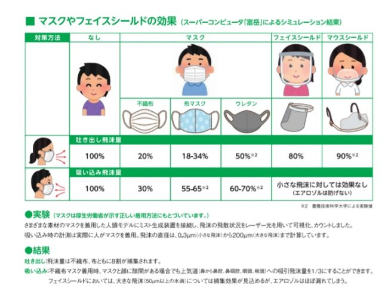

マスクによるウイルスへの効果
Home
半導体
オリンピック
マスクの効果

マスクは空気感染による対策としては効果が望めないが、飛沫感染に対する効果はとても大きいといわれている。 フェイスシールドやマウスシールドでは、自分自身の飛沫は防ぐことが出来るのだが相手からの飛沫を防ぐことが出来ない。 マスクの中でも、使い捨てマスクが1番飛沫の拡大を防ぎ、吸い込みも防ぐことが出来る。 ウレタンのマスクは効果が低いことがわかる。
マスクを捨てる際には、マスクの外側には触らないようにすること。ウイルスが付いたままになっていることがあるので直接手で触ってしまうのはよくない
眼鏡をかけている人は、メガネの曇り止めやマスクの中にティッシュをはさんだりすることによって曇りを軽減することが出来る。 立体性の布マスクを使うことによって曇りにくくすることが出来る。